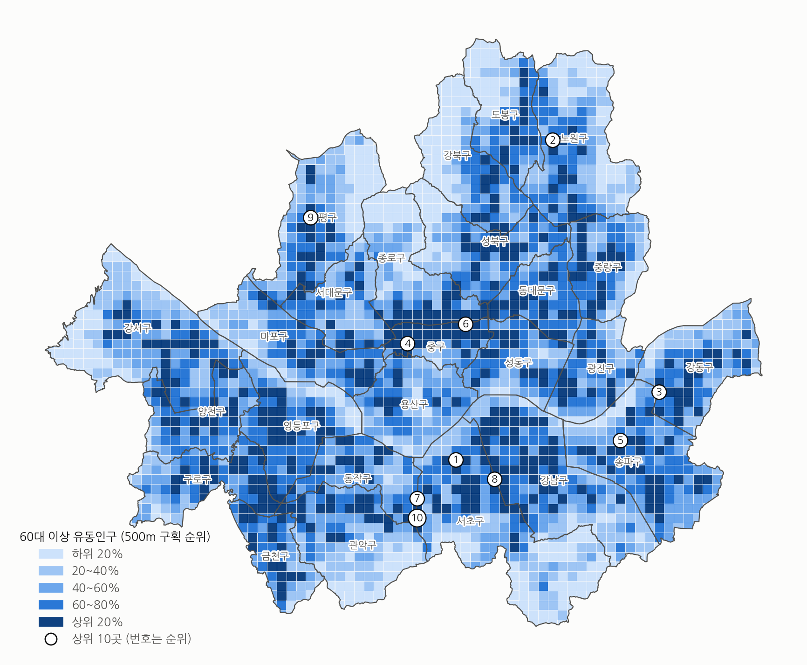

3-1. 서울시 고령 거주인구와 유동인구 분포
60세 이상 거주인구

송파구 16.8만, 강서구 15.5만, 노원구 14.3만 순. 강남구는 13.0만으로 6위.
60대 이상 유동인구

강남구가 약 94.8만으로 가장 많다. 송파구 79.6만, 서초구 73.4만 순.
서울 고령 인구 중 비중
강남구 거주 5.0% (6위) → 유동 7.7% (1위)
중구 1.4% → 4.2%
은평구 5.3% → 3.6%
두 지도 모두 500m 구획 순위 5분위 / 거주인구: 행정동 60세 이상 주민등록인구(2026.9.30)를 100m 격자 총인구 비율로 나눈 추정값 / 유동인구 집계 기간·단위 보완
11